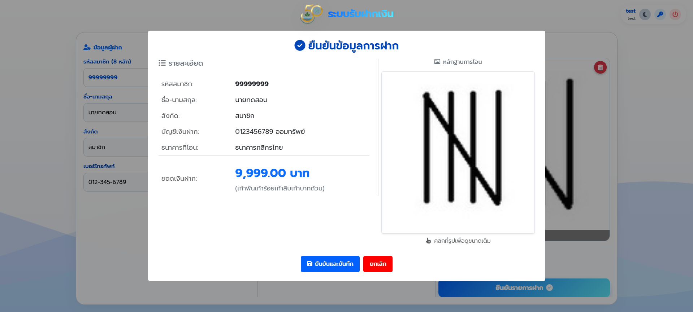
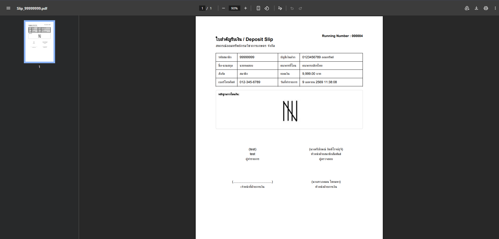

1. หน้าเข้าสู่ระบบ (Login)
ผู้ใช้งานต้องกรอก Username และ Password เพื่อเข้าสู่ระบบ
- กรอกชื่อผู้ใช้งาน (Username)
- กรอกรหัสผ่าน (Password)
- กดปุ่ม "เข้าสู่ระบบ"
2. หน้ากรอกข้อมูลผู้ฝาก
หลังจากเข้าสู่ระบบ จะพบหน้าสำหรับกรอกข้อมูลผู้ฝากและข้อมูลการฝากเงิน
- กรอกรหัสสมาชิก (8 หลัก)
- กรอกชื่อ-นามสกุล
- กรอกสังกัด
- กรอกเบอร์โทรศัพท์

3. การดึงข้อมูลอัตโนมัติ
เมื่อกรอกรหัสสมาชิกครบ 8 หลัก ระบบจะดึงข้อมูลจากฐานข้อมูลอัตโนมัติ
- แสดงชื่อ-นามสกุล
- แสดงสังกัด
- แสดงเบอร์โทรศัพท์
- แสดงบัญชีเงินฝาก
- สามารถกรอกยอดเงินฝาก หรือเว้นว่างได้
- อัปโหลดหลักฐานการโอนเงินได้ โดย:
- ลากไฟล์ (Drag & Drop)
- หรือกดเลือกไฟล์เพื่ออัปโหลด

4. การยืนยันรายการฝาก
เมื่อกรอกข้อมูลครบถ้วน ให้กด "ยืนยันรายการฝาก"
- ระบบจะแสดง Pop-up เพื่อตรวจสอบข้อมูลอีกครั้ง
- ตรวจสอบรายละเอียดให้ถูกต้อง
- กด "ยืนยันและบันทึก" เพื่อดำเนินการต่อ

5. การดาวน์โหลดไฟล์ PDF
หลังจากบันทึกข้อมูลสำเร็จ ระบบจะสร้างไฟล์ PDF
- สามารถดาวน์โหลดได้ทันทีจากหน้าจอ
- หรือดาวน์โหลดจากหน้า Dashboard ภายหลังได้

6. ตัวอย่างไฟล์ PDF
ตัวอย่างใบสำคัญรับเงินที่ระบบสร้างขึ้น
